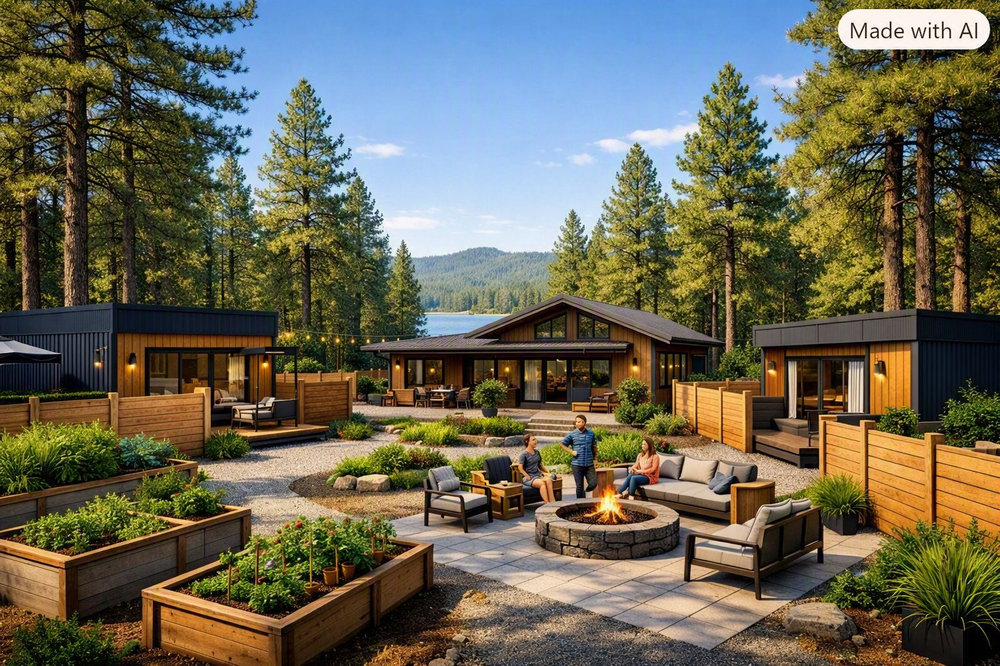
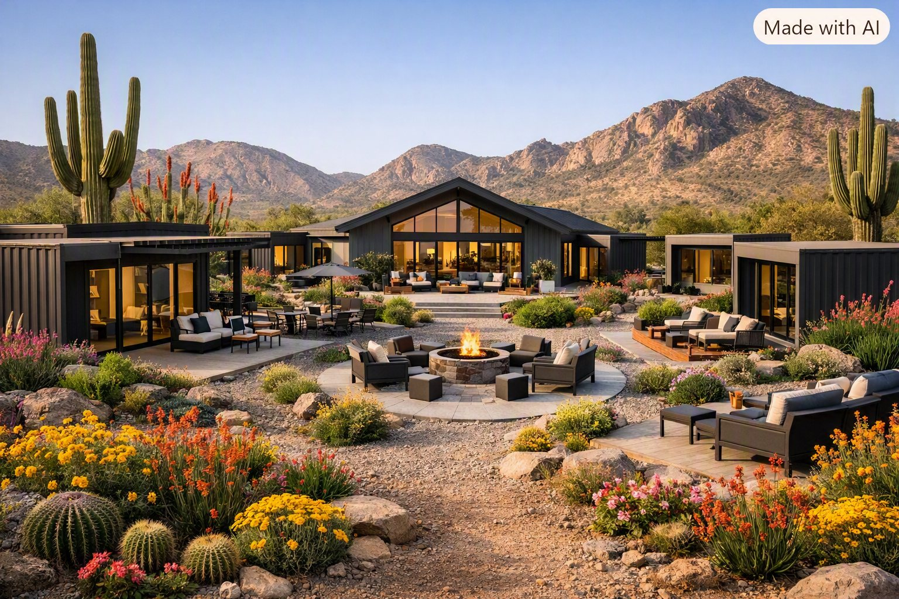
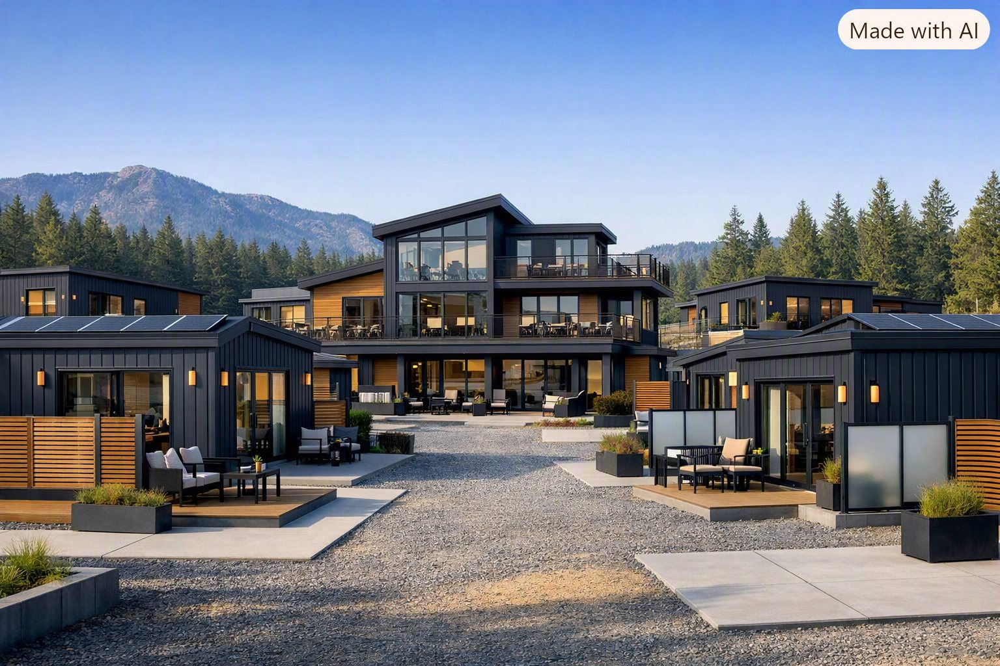
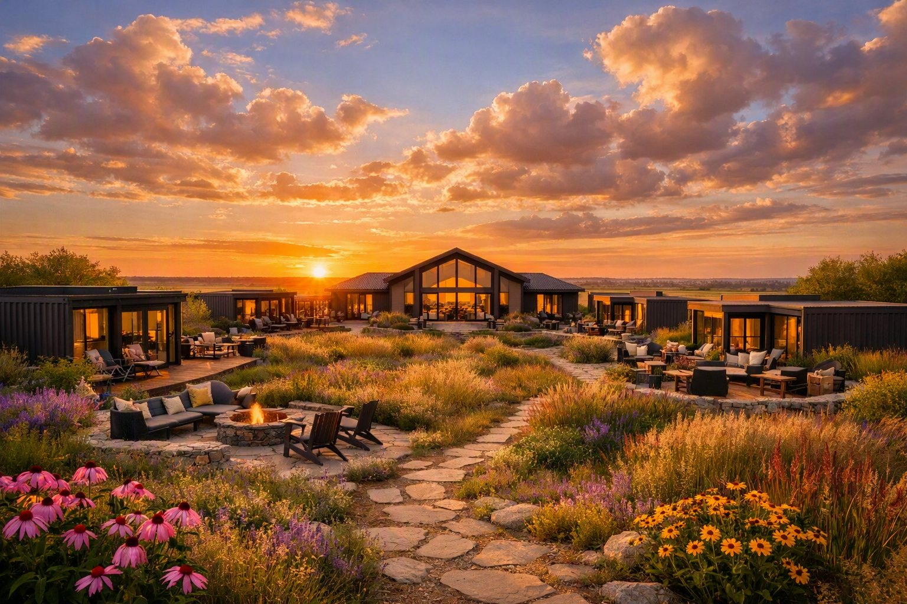

Your own front door, and neighbors you actually know.
5D Communities designs small, intentional neighborhoods of privately owned homes arranged around shared ground and a common house. Fully independent living, with company whenever you want it and none when you do not. A life with five dimensions to it, not one.

A note from the founder.
5D Communities began as a spark. A moment of clarity about what home, independence and belonging could look like when a neighborhood is designed on purpose.
That spark became a vision, and the vision is becoming real. This is about intentional living and emotional depth, and about building places where people feel seen, supported and inspired rather than managed and scheduled.
The people I have in mind have spent decades holding things together for everyone else. They are not finished and they are not fragile. What they have never been offered is a home designed around who they are now, so we are building it.
Julie Roberts, Founder
Five dimensions of a life, designed into the place itself.
Most shared housing is built around a single dimension, usually convenience or care. We build around five, because nobody is a floor plan. People arrive with curiosity, purpose, friendships, self respect and an appetite for beauty, and a place should be built to hold all of it.
- 1
Discovery
Space to ask what you actually want, rather than what the household needed or the job required. Communities are built to make trying something new easy and unembarrassing, because curiosity is a muscle that comes back quickly once it is used.
- 2
Direction
Purpose does not switch off. Most people arrive with decades of expertise and nowhere obvious to put it. We build for contribution: mentoring, teaching, consulting, volunteering, building the thing you never had time to build.
- 3
Depth
Friendship is hard to manufacture and impossible to fake. Depth is what happens when a small number of people share meals, weather and ordinary days over years. It cannot be programmed, only made likely.
- 4
Dignity
Your own front door. Your own key. A home you own rather than a unit you are assigned. Nobody checking on you and nobody deciding for you. Privacy and community are not opposites, and we refuse to trade one for the other.
- 5
Delight
The part most developments forget entirely. Good light, good food, a garden worth walking through, color, music, a fire in the evening. Beauty is not a finishing touch. It is the point.
Three communities in development.
Our first concepts are taking shape in Phoenix, Colorado and Kansas, with further locations to follow. Each is built from the same philosophy and shaped by its own landscape, climate and community.
Phoenix, Arizona
Desert siting, deep shade, and courtyard living built for the heat.
Colorado
Mountain light, long views, and interiors built for real winters.
Kansas
Open sky, generous land, and the most space per resident of the three.
Future locations
We are listening to where people are asking us to build next.



Be the first to know.
We are early, and the founding residents will shape decisions the rest will live with for years. Join the list for progress notes, renderings and application dates as they become real.
No more than one note a month. Your address stays with us.